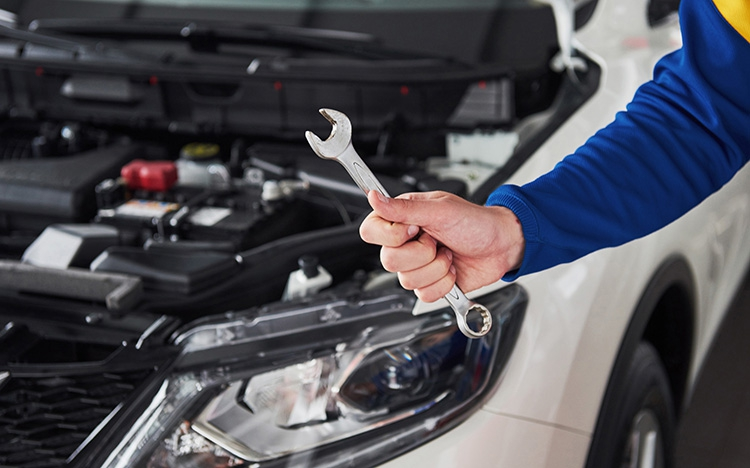

HAKKIMIZDA

Lider Oto olarak biz;
Amacımız kaliteli, hızlı, sorunsuz hizmet anlayışı ile müşterilerin ihtiyaçlarını en iyi şekilde çözümlemektir. Servisimizde hasarla ilgili işlem sürecini en aza indirgemek amaçlanmakta ve hasar anında danışmanlık hizmeti vererek müşteriye ayrıca bir külfet yüklenmeden tüm hasar işlemleri tarafımızca takip edilmektedir. Hasar departmanımız tarafından gerekli evrakların temini, hasar dosyasının açılması ve evrakların ekspere veya sigorta şirketlerine en kısa sürede, eksiksiz olarak ulaştırılmasına itina gösterilmektedir. Kayıtlarımız bilgisayar ortamında tutulmaktadır. İşyerimizde onarımı yapılan tüm marka ve model araçların yedek parçaları da tarafımızdan temin edilmekte ve araç sahiplerine bu hususta bir yük getirilmemektedir. Tüm marka ve model araçlar “anahtar teslim” diye tabir edilen şekilde yedek parça ve işçilik garantisi verilerek onarılmaktadır.